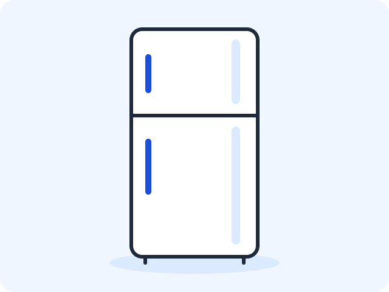
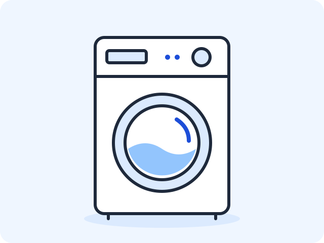

Учебный вариант 00 — пара 15
Пример преподавателя «Техника дома · V00». Студентам он не назначается. Все данные трёх страниц сохранены ниже; этот снимок не зависит от сменяемого комплекта вариантов.
Задание: продолжить Variant00-web, подключить один style.css ко всем трём страницам, дать основному main класс page, каждому из трёх article каталога — класс card. Настроить общие размеры и отделить карточки рамками и отступами. Данные страниц и форма сохраняются.
| Где | Что задать в CSS |
|---|---|
* |
box-sizing: border-box |
body |
Шрифт Arial, размер 1rem, межстрочный интервал 1.5, margin: 0; фон #EFF6FF, текст #1E293B |
main.page |
width: 92%; max-width: 56rem; margin: 0 auto; padding: 1rem |
.card |
border: 1px solid #94A3B8; padding: 1rem; margin-bottom: 1rem |
img |
max-width: 100%; height: auto |
В меню каждой страницы две ссылки на другие страницы, без ссылки на саму себя. Карточки идут сверху вниз. На этой паре у них нейтральные рамки; цветные плашки и оформление формы относятся к следующей паре.
После работы откройте главную, каталог и форму. У трёх товаров должны быть отдельные рамки с пространством вокруг текста. Изображения и поля помещаются в своих блоках; переходы и ограничения формы сохраняются. Точные отступы на глаз измерять не нужно.
Содержание главной страницы
| Элемент | Текст или изображение |
|---|---|
| Название приложения | Техника дома · V00 |
| Заголовок главной | Бытовая техника для дома |
| Короткое пояснение | Выберите технику для повседневных дел |
| Описание | Три прибора для кухни и дома. Сравните характеристики и выберите нужный товар. |
| Основное изображение | fridge.svg  |
| Название перехода к каталогу | Посмотреть технику |
| Название перехода к форме | Открыть форму заказа |
| Подпись в подвале | Учебный прототип · Вариант 00 |
На паре 13 главная сохраняет эти тексты, изображение и подпись. Ссылка «Посмотреть технику» ведёт на catalog.html; на паре 14 ссылка «Открыть форму заказа» ведёт на form.html.
Содержание каталога
Название — «Каталог техники». Пояснение — «Три товара с основными характеристиками».
| № | Название | Характеристика | Описание | Файл изображения |
|---|---|---|---|---|
| 1 | Холодильник | 300 л · 2 камеры | Для хранения свежих и замороженных продуктов | fridge.svg |
| 2 | Стиральная машина | 7 кг · 1000 об/мин | Для стирки повседневной одежды | washer.svg  |
| 3 | Электрочайник | 1,7 л · 2000 Вт | Для быстрого нагрева воды | kettle.svg  |
Скопируйте SVG-файлы в папку images веб-проекта по инструкции занятия. Это нейтральные учебные иллюстрации без брендов, созданные для данного примера; рисовать их студентам не требуется.
Используйте все три позиции в указанном порядке. Каждая позиция — отдельный article с названием в h2, изображением с содержательным alt, характеристикой и описанием. Блоки идут сверху вниз. Каталог содержит переход на главную; на паре 14 добавляется переход к форме.
Содержание формы — пара 14
Название формы — «Заказ техники». У каждого поля есть видимая подпись, связанная с элементом через for и id. Для отправляемых элементов задаются name.
| Подпись | Элемент и данные | Уточнение |
|---|---|---|
| Товар | select: Холодильник; Стиральная машина; Электрочайник |
Первая строка пустая; выбор обязателен |
| Количество единиц | Числовое поле | Минимум 1, шаг 1, начальное значение 1; поле обязательно |
| Комментарий к заказу | textarea |
Подсказка: «Например, удобный день доставки» |
| Нужна доставка | Независимый флажок | Выбран в начале |
| Нужна установка | Независимый флажок | Не выбран в начале |
| Срочность заказа | Ползунок от 1 до 5 | Начальное значение 3; края шкалы: «Не срочно» и «Срочно» |
Все шесть элементов таблицы входят в обязательный результат; порядок строк задаёт их расположение в примере 00. Флажки переключаются независимо.
Кнопка отправки — «Проверить заказ». Ссылка «Назад» ведёт на index.html. Из главной и каталога можно перейти к форме, из формы — вернуться на главную.
Отправка методом GET выполняется локально: страница перезагружается, а параметры видны в адресе. Сервер, хранение и обработка заказов отсутствуют. Настройка и объяснение — в статье 14.
Вернуться к объяснению пары 15.